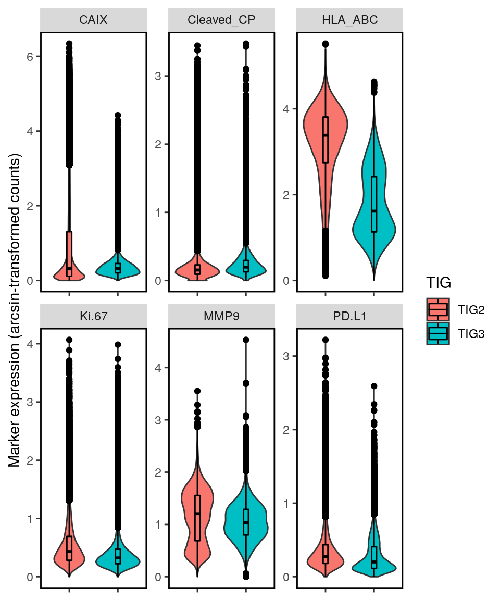
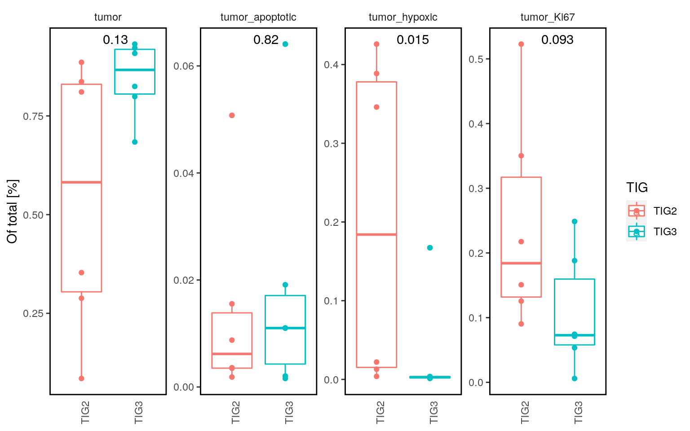
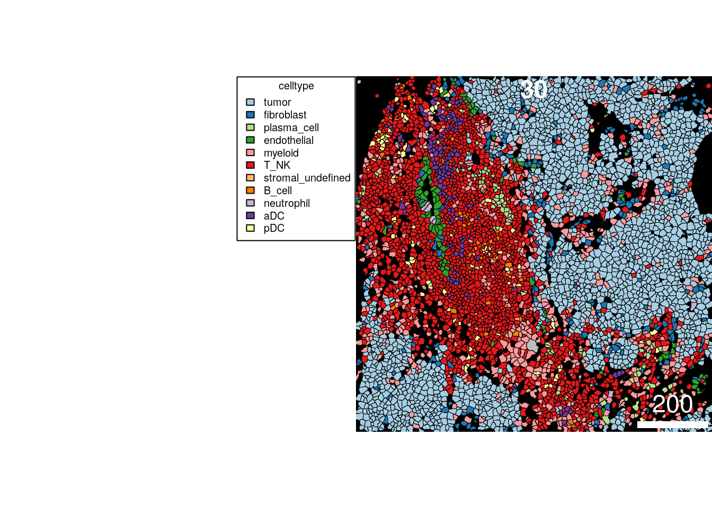

06_proteinPanel_tumor_analysis
SandraTietscher
2020-10-26
Last updated: 2020-11-02
Checks: 7 0
Knit directory: BCexh_IMC/
This reproducible R Markdown analysis was created with workflowr (version 1.6.2). The Checks tab describes the reproducibility checks that were applied when the results were created. The Past versions tab lists the development history.
Great! Since the R Markdown file has been committed to the Git repository, you know the exact version of the code that produced these results.
Great job! The global environment was empty. Objects defined in the global environment can affect the analysis in your R Markdown file in unknown ways. For reproduciblity it’s best to always run the code in an empty environment.
The command set.seed(12345) was run prior to running the code in the R Markdown file. Setting a seed ensures that any results that rely on randomness, e.g. subsampling or permutations, are reproducible.
Great job! Recording the operating system, R version, and package versions is critical for reproducibility.
Nice! There were no cached chunks for this analysis, so you can be confident that you successfully produced the results during this run.
Great job! Using relative paths to the files within your workflowr project makes it easier to run your code on other machines.
Great! You are using Git for version control. Tracking code development and connecting the code version to the results is critical for reproducibility.
The results in this page were generated with repository version 559190f. See the Past versions tab to see a history of the changes made to the R Markdown and HTML files.
Note that you need to be careful to ensure that all relevant files for the analysis have been committed to Git prior to generating the results (you can use wflow_publish or wflow_git_commit). workflowr only checks the R Markdown file, but you know if there are other scripts or data files that it depends on. Below is the status of the Git repository when the results were generated:
Ignored files:
Ignored: analysis/.Rhistory
Untracked files:
Untracked: analysis/11_RNApanel_neighbourhood.Rmd
Untracked: code/helper_functions/
Untracked: data/Ki67_IHC.csv
Untracked: data/ProteinPanel_TNK_clusters.csv
Untracked: data/ProteinPanel_stromal_clusters.csv
Untracked: data/ProteinPanel_tumor_stroma_clusters.csv
Untracked: data/RNApanel_TNK_clusters.csv
Untracked: data/RNApanel_stromal_clusters.csv
Untracked: data/RNApanel_tumor_stroma_clusters.csv
Untracked: data/RNAseq_Tcells.rds
Untracked: data/RNAseq_celltype_prop.csv
Untracked: data/RNAseq_epithelial.rds
Untracked: data/ROI_info_HIER.csv
Untracked: data/ROI_info_HIER_TLSrevised.csv
Untracked: data/ROI_info_RNAscope.csv
Untracked: data/ROI_info_RNAscope_TLSrevised.csv
Untracked: data/TLS_scores.csv
Untracked: data/cpout/
Untracked: data/cytof_celltype_prop.csv
Untracked: data/masks/
Untracked: output/ProteinPanel/
Untracked: output/RNApanel/
Untracked: output/TLS_score_25samples.png
Untracked: output/sce_ProteinPanel_afterQC.rds
Untracked: output/sce_ProteinPanel_initial.rds
Untracked: output/sce_ProteinPanel_initial_TLSrevised.rds
Untracked: output/sce_RNApanel_afterQC.rds
Untracked: output/sce_RNApanel_initial.rds
Untracked: output/sce_RNApanel_initial_TLSrevised.rds
Unstaged changes:
Modified: analysis/08_proteinPanel_neighbourhood.Rmd
Note that any generated files, e.g. HTML, png, CSS, etc., are not included in this status report because it is ok for generated content to have uncommitted changes.
These are the previous versions of the repository in which changes were made to the R Markdown (analysis/06_proteinPanel_tumor_analysis.Rmd) and HTML (docs/06_proteinPanel_tumor_analysis.html) files. If you’ve configured a remote Git repository (see ?wflow_git_remote), click on the hyperlinks in the table below to view the files as they were in that past version.
| File | Version | Author | Date | Message |
|---|---|---|---|---|
| html | 200dd71 | SandraTietscher | 2020-10-29 | Build site. |
| Rmd | 05a9ffe | SandraTietscher | 2020-10-29 | Better naming of intermediate files |
| html | b76baeb | SandraTietscher | 2020-10-28 | Build site. |
| Rmd | 5e88949 | SandraTietscher | 2020-10-28 | Cell subtype update |
| html | 4763625 | SandraTietscher | 2020-10-26 | Build site. |
| Rmd | a231b83 | SandraTietscher | 2020-10-26 | Added cytomapper plots |
| html | c75e943 | SandraTietscher | 2020-10-26 | Build site. |
| Rmd | dcf8349 | SandraTietscher | 2020-10-26 | wflow_publish(“analysis/06_proteinPanel_tumor_analysis.Rmd”) |
Introduction
This script looks in more detail into the epithelial cell subset. This is done on the Protein Panel data, because it contains more tumor-relevant markers than the RNA panel. Given that there are still not many tumor markers in the panel, this is a rather coarse analysis.
Load libraries and data
# Load libraries
library(ggplot2)
library(SingleCellExperiment)
library(scater)
library(tidyverse)
library(dittoSeq)
library(viridis)
library(cowplot)
library(ggpubr)
library(scran)
library(dplyr)
library(Seurat)
# Read SingleCellExperiment object (with tumor cells only)
sce_tumor <- readRDS(paste0(getwd(), "/output/ProteinPanel/sce_ProteinPanel_tumor.rds"))
TIG2 <- c("TBB111", "TBB129", "TBB165", "TBB171", "TBB184", "TBB338")Tumor cell subclustering
Calculate UMAP on all tumor cells
markers_include_umap <- c("CAIX", "Cleaved_CP", "Ki-67", "E-Cadherin", "panCK", "HLA-ABC", "MMP9", "SMA", "CD274")
sce_tumor <- runUMAP(sce_tumor, exprs_values = "exprs",
subset_row = rownames(assay(sce_tumor, "scaled")) %in% markers_include_umap)Visualize features on UMAP
dittoDimPlot(sce_tumor, var = "sample", reduction.use = "UMAP", size = 0.5,
color.panel = metadata(sce_tumor)$colour_vectors$sample, opacity = 0.2) 
| Version | Author | Date |
|---|---|---|
| c75e943 | SandraTietscher | 2020-10-26 |
dittoDimPlot(sce_tumor, var = "sample", reduction.use = "UMAP", size = 0.5,
color.panel = metadata(sce_tumor)$colour_vectors$sample, split.by = "sample", opacity = 0.2) 
| Version | Author | Date |
|---|---|---|
| c75e943 | SandraTietscher | 2020-10-26 |
dittoDimPlot(sce_tumor, var = "TIG", reduction.use = "UMAP", size = 0.5,
color.panel = metadata(sce_tumor)$colour_vectors$TIG)
| Version | Author | Date |
|---|---|---|
| c75e943 | SandraTietscher | 2020-10-26 |
dittoDimPlot(sce_tumor, var = "TLS", reduction.use = "UMAP", size = 0.5,
color.panel = metadata(sce_tumor)$colour_vectors$TLS)
| Version | Author | Date |
|---|---|---|
| c75e943 | SandraTietscher | 2020-10-26 |
Visualize marker expression on UMAP
# Plot expression of all markers
p.list <- list()
for(i in markers_include_umap){
p.list[[i]] <- plotUMAP(sce_tumor, colour_by = i, by_exprs_values = "scaled",
point_size = 0.5, point_alpha = 1, shape_by = "panel_type") + scale_colour_gradient2(name = i, low = "#2166ac", mid = "white", high = "#b2182b", limits = c(-3, 3))
}
plot_grid(plotlist = p.list, ncol = 5)
Run graph-based clustering for tumor subset (Phenograph)
Display clusters on UMAP.
cluster_counts_tumor <- subset(assay(sce_tumor, "normalized"), rownames(assay(sce_tumor, "normalized")) %in% markers_include_umap)
g <- buildSNNGraph(cluster_counts_tumor, k=50)
clust <- igraph::cluster_louvain(g)$membership
table(clust)clust
1 2 3 4 5 6 7 8 9 10 11 12 13
18496 11542 6477 10581 8842 20390 16284 2473 15905 13496 6964 3417 28458
14 15 16
17782 15981 18125 #write.csv(table(clust), paste0(getwd(), "/output/ProteinPanel/tumor_cluster_cellnumbers.csv"), row.names = FALSE)
#add cluster information to sce object
sce_tumor$tumor_cluster <- as.factor(clust)
#plot on umap
dittoDimPlot(sce_tumor, var = "tumor_cluster", reduction.use = "UMAP", size = 0.2, do.label = TRUE, opacity = 0.2)
| Version | Author | Date |
|---|---|---|
| c75e943 | SandraTietscher | 2020-10-26 |
dittoDimPlot(sce_tumor, var = "tumor_cluster", reduction.use = "UMAP", size = 0.2, split.by = "tumor_cluster", opacity = 0.2)
| Version | Author | Date |
|---|---|---|
| c75e943 | SandraTietscher | 2020-10-26 |
Plot mean expression for each cluster
clustermean <- aggregateAcrossCells(sce_tumor, ids = DataFrame(cluster = sce_tumor$tumor_cluster), average = TRUE)
colnames(clustermean) <- clustermean$cluster
# Center and scale raw counts
assay(clustermean, "scaled") <- t(scale(t(assay(clustermean, "counts"))))
# Normalize raw counts
norm_counts <- t(apply(assay(clustermean, "counts"), 1, function(x)(x-min(x))/(max(x)-min(x))))
assay(clustermean, "normalized", withDimnames = FALSE) <- norm_counts
## Plot
# Z-scaled
dittoHeatmap(clustermean[markers_include_umap,], assay = "scaled", scale = "none",
heatmap.colors = magma(100),
cluster_cols = TRUE, show_colnames = TRUE,
breaks = seq(-3, 3, length.out = 101))
# Normalized (0-1)
dittoHeatmap(clustermean[markers_include_umap,], assay = "normalized", scale = "none",
heatmap.colors = viridis(100),
cluster_cols = TRUE, show_colnames = TRUE)
Plot sample proportions per cluster
props <- as.data.frame(prop.table(table(sce_tumor$tumor_cluster, sce_tumor$sample), margin = 1))
colnames(props) <- c("cluster", "sample", "proportion")
ggplot(props, aes(cluster, y = proportion, fill=sample)) +
geom_bar(stat="identity")+
theme(axis.title.x=element_blank(), axis.title.y = element_blank())+
theme(panel.background = element_blank(), axis.text.x = element_text(angle = 30))
| Version | Author | Date |
|---|---|---|
| c75e943 | SandraTietscher | 2020-10-26 |
Compare marker expression in TIG2 versus TIG3
Single-cell violin plots.
exprs <- data.frame(HLA_ABC = assay(sce_tumor, "exprs")["HLA-ABC",],
`Ki-67` = assay(sce_tumor, "exprs")["Ki-67",],
CAIX = assay(sce_tumor, "exprs")["CAIX",],
Cleaved_CP = assay(sce_tumor, "exprs")["Cleaved_CP",],
`PD-L1` = assay(sce_tumor, "exprs")["CD274",],
MMP9 = assay(sce_tumor, "exprs")["MMP9",])
tumor_tab <- cbind(exprs, colData(sce_tumor))
tumor_tab <- pivot_longer(tumor_tab, 1:6, names_to = "marker", values_to = "exprs")
ggplot(tumor_tab, aes(x=TIG, y = exprs, fill = TIG))+
geom_violin(aes(fill=TIG))+
geom_boxplot(position=position_dodge(width=0.9), width=0.1, color="black", aes(fill=TIG))+
facet_wrap(~marker, scale = "free")+
theme(axis.line.x = element_line(colour = "black", size = 0.25),
axis.line.y = element_line(colour = "black", size = 0.25),
panel.grid.major = element_blank(),
panel.grid.minor = element_blank(),
panel.border = element_blank(),
panel.background = element_blank(),
axis.title.x = element_blank())+
ylab("Marker expression (arcsin-transformed counts)")
| Version | Author | Date |
|---|---|---|
| c75e943 | SandraTietscher | 2020-10-26 |
Comparison of patient means.
# Patient means
counts <- data.frame(HLA_ABC = assay(sce_tumor, "counts")["HLA-ABC",],
`Ki-67` = assay(sce_tumor, "counts")["Ki-67",],
CAIX = assay(sce_tumor, "counts")["CAIX",],
Cleaved_CP = assay(sce_tumor, "counts")["Cleaved_CP",],
`PD-L1` = assay(sce_tumor, "counts")["CD274",],
MMP9 = assay(sce_tumor, "counts")["MMP9",])
tumor_tab_2 <- cbind(counts, colData(sce_tumor))
tumor_tab_2 <- pivot_longer(tumor_tab_2, 1:6, names_to = "marker", values_to = "counts")
sample_means <- data.frame(sample = levels(factor(tumor_tab_2$sample)))
for (i in c("HLA_ABC", "CAIX", "Cleaved_CP", "Ki.67", "PD.L1", "MMP9")) {
tumor.i <- filter(tumor_tab_2, marker == i)
i.means <- tumor.i %>% group_by(sample) %>% dplyr::summarise(mean = mean(counts))
sample_means[,i] <- i.means$mean
}
sample_means$TIG <- c(rep("TIG2", 6), rep("TIG3", 6))
sample_means <- pivot_longer(sample_means, 2:7, names_to = "marker", values_to = "counts")
ggplot(sample_means, aes(TIG, counts, fill = TIG))+
geom_boxplot(aes(fill=TIG))+
geom_point(position=position_dodge(width=0.75), aes(group=TIG))+
facet_wrap(~marker, scales = "free")+
stat_compare_means(method = "wilcox.test", aes(label=..p.format..), vjust = 1, label.x.npc = 0.5)+
theme(axis.line.x = element_line(colour = "black", size = 0.25),
axis.line.y = element_line(colour = "black", size = 0.25),
panel.grid.major = element_blank(),
panel.grid.minor = element_blank(),
panel.border = element_rect(colour = "black", fill=NA, size=1),
panel.background = element_blank(),
strip.background = element_blank())
| Version | Author | Date |
|---|---|---|
| c75e943 | SandraTietscher | 2020-10-26 |
Correlation of HLA-ABC expression (protein level) and HER2 expression (transcript level)
# Read in Seurat object
tumor10x <- readRDS("data/RNAseq_epithelial.rds")
# Calculate averages
tumor10x_sub <- tumor10x["ERBB2",]
Idents(tumor10x_sub) <- tumor10x_sub$orig.ident
cluster.averages <- as.data.frame(t(AverageExpression(object = tumor10x_sub, return.seurat = FALSE)[[1]]))
cluster.averages$sample <- rownames(cluster.averages)
# Remove samples that were not measured by IMC
not.measured <- c("TBB011", "TBB330")
cluster.averages <- cluster.averages[!(rownames(cluster.averages) %in% not.measured),]
# Merge with HLA-ABC data from IMC
IMC_means <- sample_means %>% filter(marker == "HLA_ABC")
comb.tab <- merge(IMC_means, cluster.averages, by = "sample")
colnames(comb.tab)[4] <- "HLA_ABC"
ggplot(comb.tab, aes(HLA_ABC, ERBB2)) +
geom_point(aes(color=TIG))+
geom_smooth(method = lm, color = "black", se=FALSE)+
stat_cor(method="spearman")+
theme(axis.line.x = element_line(colour = "black", size = 0.25),
axis.line.y = element_line(colour = "black", size = 0.25),
panel.grid.major = element_blank(),
panel.grid.minor = element_blank(),
panel.border = element_rect(colour = "black", fill=NA, size=1),
panel.background = element_blank())
Define cell status
Based on Ki67, Carbonic Anhydrase IX and Cleaved Caspase/Cleaved PARP expression
Define Ki-67 positive tumor cells
dittoPlot(sce_tumor, "Ki-67", group.by = "tumor_cluster",
plots = c("vlnplot"), assay = "exprs")+
geom_hline(yintercept = 0.7, lty = "dashed")
| Version | Author | Date |
|---|---|---|
| c75e943 | SandraTietscher | 2020-10-26 |
dittoPlot(sce_tumor, "Ki-67", group.by = "panel_type",
plots = c("vlnplot"), assay = "exprs", vlnplot.width = 1)+
geom_hline(yintercept = 0.7, lty = "dashed")
| Version | Author | Date |
|---|---|---|
| c75e943 | SandraTietscher | 2020-10-26 |
# Assign Ki67-status
sce_tumor$Ki67_status <- ifelse(assay(sce_tumor, "exprs")["Ki-67",] >= 0.7, TRUE, FALSE)
Ki67_props <- as.data.frame(proportions(table(sce_tumor$sample, sce_tumor$Ki67_status), margin = 1))
colnames(Ki67_props) <- c("sample", "status", "IMC_proportion")
Ki67_props <- Ki67_props %>% filter(status == TRUE)
# Read in clinically determined Ki67 percentage (IHC)
Ki67_IHC <- read.csv("data/Ki67_IHC.csv")
Ki67_comb <- merge(Ki67_props, Ki67_IHC, by = "sample")
ggplot(Ki67_comb, aes(IMC_proportion*100, Ki67_IHC)) +
geom_point()+
geom_smooth(method = lm, color = "black", se=FALSE)+
stat_cor(method="spearman")+
theme(axis.line.x = element_line(colour = "black", size = 0.25),
axis.line.y = element_line(colour = "black", size = 0.25),
panel.grid.major = element_blank(),
panel.grid.minor = element_blank(),
panel.border = element_rect(colour = "black", fill=NA, size=1),
panel.background = element_blank())+
xlab("Ki67_IMC [%]")+
ylab("Ki67_clinical_IHC [%]")`geom_smooth()` using formula 'y ~ x'
| Version | Author | Date |
|---|---|---|
| c75e943 | SandraTietscher | 2020-10-26 |
Define hypoxic and apoptotic tumor cells
dittoPlot(sce_tumor, "Cleaved_CP", group.by = "tumor_cluster",
plots = c("vlnplot"), assay = "exprs")+
geom_hline(yintercept = 0.5, lty = "dashed")
| Version | Author | Date |
|---|---|---|
| c75e943 | SandraTietscher | 2020-10-26 |
dittoPlot(sce_tumor, "CAIX", group.by = "tumor_cluster",
plots = c("vlnplot"), assay = "exprs")+
geom_hline(yintercept = 0.9, lty = "dashed")
| Version | Author | Date |
|---|---|---|
| c75e943 | SandraTietscher | 2020-10-26 |
dittoPlot(sce_tumor, "Cleaved_CP", group.by = "panel_type",
plots = c("vlnplot"), assay = "exprs", vlnplot.width = 1)+
geom_hline(yintercept = 0.5, lty = "dashed")
| Version | Author | Date |
|---|---|---|
| c75e943 | SandraTietscher | 2020-10-26 |
dittoPlot(sce_tumor, "CAIX", group.by = "panel_type",
plots = c("vlnplot"), assay = "exprs", vlnplot.width = 1)+
geom_hline(yintercept = 0.9, lty = "dashed")
| Version | Author | Date |
|---|---|---|
| c75e943 | SandraTietscher | 2020-10-26 |
# Assign hypoxia-status and apoptotic status
sce_tumor$hypoxic <- ifelse(assay(sce_tumor, "exprs")["CAIX",] >= 0.9, TRUE, FALSE)
sce_tumor$apoptotic <- ifelse(assay(sce_tumor, "exprs")["Cleaved_CP",] >= 0.5, TRUE, FALSE)
# Check overlap
table(sce_tumor$hypoxic, sce_tumor$apoptotic)
FALSE TRUE
FALSE 175187 4607
TRUE 33247 2172table(sce_tumor$hypoxic, sce_tumor$Ki67_status)
FALSE TRUE
FALSE 152156 27638
TRUE 23811 11608table(sce_tumor$apoptotic, sce_tumor$Ki67_status)
FALSE TRUE
FALSE 171180 37254
TRUE 4787 1992Assign cell status for tumor cells and attach to main SCE
Around 1/3 of all apoptotic cells are also hypoxic. Around 1/3 of all hypoxic cells are Ki67+.
Define order of relevance for assigning cell status:
1. Ki-67
2. hypoxic
3. apoptotic
sce_tumor$cell_status <- ifelse(sce_tumor$Ki67_status == TRUE, "tumor_Ki67", ifelse(sce_tumor$hypoxic == TRUE, "tumor_hypoxic", ifelse(sce_tumor$apoptotic == TRUE, "tumor_apoptotic", "tumor")))
# Plot proportions
tab <- as.data.frame(prop.table(table(sce_tumor$sample, sce_tumor$cell_status), margin = 1))
colnames(tab) <- c("sample", "cell_status", "proportion")
tab$TIG <- ifelse(tab$sample %in% TIG2, "TIG2", "TIG3")
ggplot(tab, aes(x= TIG, y = proportion, color=TIG))+
geom_boxplot()+
geom_point()+
facet_wrap(~cell_status, scales="free", ncol=4, strip.position="top")+
theme(axis.ticks.x = element_blank(),
axis.text.x=element_text(angle = 90, hjust=1),
axis.title.x = element_blank(),
panel.background = element_blank(),
panel.border = element_rect(color = "black", fill = NA, size = 1),
strip.background = element_blank(),
legend.background = element_blank())+
ylab("Of total [%]")+
stat_compare_means(method = "wilcox.test", aes(label=..p.format..), label.x.npc = 0.5)
ggplot(tab, aes(sample, y = proportion, fill=cell_status)) +
geom_bar(stat="identity")+
theme(axis.title.x=element_blank(), axis.title.y = element_blank())+
theme(panel.background = element_blank(), axis.text.x = element_text(angle = 30))
Update SCE objects
saveRDS(sce_tumor, "output/ProteinPanel/sce_ProteinPanel_tumor.rds")Add tumor cell status to main SCE object as “subtype”
sce_protein <- readRDS(file = "output/ProteinPanel/sce_ProteinPanel_celltypes.rds")
sce_protein$subtype <- sce_protein$celltype
tumor_ids <- colnames(sce_tumor)
sce_protein[,tumor_ids]$subtype <- sce_tumor$cell_status
saveRDS(sce_protein, "output/ProteinPanel/sce_ProteinPanel_subtypes.rds")Cytomapper visualization
library(cytomapper)
# Load mask files
path.to.images <- "data/masks/ProteinPanel_masks"
all_masks <- loadImages(path.to.images, pattern = "_mask.tiff")
all_masksCytoImageList containing 77 image(s)
names(77): 20200819_ST_BCexh_H_TBB075_s0_p3_r1_a1_ac_ilastik_s2_Probabilities_mask 20200819_ST_BCexh_H_TBB075_s0_p3_r2_a2_ac_ilastik_s2_Probabilities_mask 20200819_ST_BCexh_H_TBB075_s0_p3_r3_a3_ac_ilastik_s2_Probabilities_mask 20200819_ST_BCexh_H_TBB075_s0_p3_r4_a4_ac_ilastik_s2_Probabilities_mask 20200819_ST_BCexh_H_TBB075_s0_p3_r5_a5_ac_ilastik_s2_Probabilities_mask 20200819_ST_BCexh_H_TBB075_s0_p3_r6_a6_ac_ilastik_s2_Probabilities_mask 20200819_ST_BCexh_H_TBB226_s0_p3_r1_a1_ac_ilastik_s2_Probabilities_mask 20200819_ST_BCexh_H_TBB226_s0_p3_r2_a2_ac_ilastik_s2_Probabilities_mask 20200819_ST_BCexh_H_TBB226_s0_p3_r3_a3_ac_ilastik_s2_Probabilities_mask 20200819_ST_BCexh_H_TBB226_s0_p3_r4_a4_ac_ilastik_s2_Probabilities_mask 20200819_ST_BCexh_H_TBB226_s0_p3_r5_a5_ac_ilastik_s2_Probabilities_mask 20200819_ST_BCexh_H_TBB226_s0_p3_r6_a6_ac_ilastik_s2_Probabilities_mask 20200819_ST_BCexh_H_TBB226_s0_p3_r7_a7_ac_ilastik_s2_Probabilities_mask 20200820_ST_BCexh_H_TBB212_s0_p3_r1_a1_ac_ilastik_s2_Probabilities_mask 20200820_ST_BCexh_H_TBB212_s0_p3_r10_a10_ac_ilastik_s2_Probabilities_mask 20200820_ST_BCexh_H_TBB212_s0_p3_r2_a2_ac_ilastik_s2_Probabilities_mask 20200820_ST_BCexh_H_TBB212_s0_p3_r3_a3_ac_ilastik_s2_Probabilities_mask 20200820_ST_BCexh_H_TBB212_s0_p3_r4_a4_ac_ilastik_s2_Probabilities_mask 20200820_ST_BCexh_H_TBB212_s0_p3_r5_a5_ac_ilastik_s2_Probabilities_mask 20200820_ST_BCexh_H_TBB212_s0_p3_r6_a6_ac_ilastik_s2_Probabilities_mask 20200820_ST_BCexh_H_TBB212_s0_p3_r7_a7_ac_ilastik_s2_Probabilities_mask 20200820_ST_BCexh_H_TBB212_s0_p3_r8_a8_ac_ilastik_s2_Probabilities_mask 20200820_ST_BCexh_H_TBB212_s0_p3_r9_a9_ac_ilastik_s2_Probabilities_mask 20200821_ST_BCexh_H_TBB035_s0_p4_r1_a1_ac_ilastik_s2_Probabilities_mask 20200821_ST_BCexh_H_TBB035_s0_p4_r2_a2_ac_ilastik_s2_Probabilities_mask 20200821_ST_BCexh_H_TBB035_s0_p4_r3_a3_ac_ilastik_s2_Probabilities_mask 20200821_ST_BCexh_H_TBB035_s0_p4_r4_a4_ac_ilastik_s2_Probabilities_mask 20200821_ST_BCexh_H_TBB035_s0_p4_r5_a5_ac_ilastik_s2_Probabilities_mask 20200821_ST_BCexh_H_TBB165_s0_p3_r1_a1_ac_ilastik_s2_Probabilities_mask 20200821_ST_BCexh_H_TBB165_s0_p3_r2_a2_ac_ilastik_s2_Probabilities_mask 20200821_ST_BCexh_H_TBB165_s0_p3_r3_a3_ac_ilastik_s2_Probabilities_mask 20200821_ST_BCexh_H_TBB165_s0_p3_r4_a4_ac_ilastik_s2_Probabilities_mask 20200821_ST_BCexh_H_TBB165_s0_p3_r5_a5_ac_ilastik_s2_Probabilities_mask 20200821_ST_BCexh_H_TBB165_s0_p3_r6_a6_ac_ilastik_s2_Probabilities_mask 20200821_ST_BCexh_H_TBB165_s0_p3_r7_a7_ac_ilastik_s2_Probabilities_mask 20200822_ST_BCexh_H_TBB102_s0_p3_r1_a1_ac_ilastik_s2_Probabilities_mask 20200822_ST_BCexh_H_TBB102_s0_p3_r2_a2_ac_ilastik_s2_Probabilities_mask 20200822_ST_BCexh_H_TBB102_s0_p3_r3_a3_ac_ilastik_s2_Probabilities_mask 20200822_ST_BCexh_H_TBB102_s0_p3_r4_a4_ac_ilastik_s2_Probabilities_mask 20200822_ST_BCexh_H_TBB102_s0_p3_r5_a5_ac_ilastik_s2_Probabilities_mask 20200822_ST_BCexh_H_TBB102_s0_p3_r6_a6_ac_ilastik_s2_Probabilities_mask 20200822_ST_BCexh_H_TBB214_s0_p3_r1_a1_ac_ilastik_s2_Probabilities_mask 20200822_ST_BCexh_H_TBB214_s0_p3_r2_a2_ac_ilastik_s2_Probabilities_mask 20200822_ST_BCexh_H_TBB214_s0_p3_r3_a3_ac_ilastik_s2_Probabilities_mask 20200822_ST_BCexh_H_TBB214_s0_p3_r4_a4_ac_ilastik_s2_Probabilities_mask 20200822_ST_BCexh_H_TBB214_s0_p3_r5_a5_ac_ilastik_s2_Probabilities_mask 20200822_ST_BCexh_H_TBB214_s0_p3_r6_a6_ac_ilastik_s2_Probabilities_mask 20200822_ST_BCexh_H_TBB214_s0_p3_r7_a7_ac_ilastik_s2_Probabilities_mask 20200924_ST_BCexh_H_TBB129_s0_p3_r1_a1_ac_ilastik_s2_Probabilities_mask 20200924_ST_BCexh_H_TBB129_s0_p3_r2_a2_ac_ilastik_s2_Probabilities_mask 20200924_ST_BCexh_H_TBB129_s0_p3_r3_a3_ac_ilastik_s2_Probabilities_mask 20200924_ST_BCexh_H_TBB129_s0_p3_r4_a4_ac_ilastik_s2_Probabilities_mask 20200924_ST_BCexh_H_TBB129_s0_p3_r5_a5_ac_ilastik_s2_Probabilities_mask 20200924_ST_BCexh_H_TBB129_s0_p3_r6_a6_ac_ilastik_s2_Probabilities_mask 20200925_ST_BCexh_H_TBB171_s0_p3_r1_a1_ac_ilastik_s2_Probabilities_mask 20200925_ST_BCexh_H_TBB171_s0_p3_r2_a2_ac_ilastik_s2_Probabilities_mask 20200925_ST_BCexh_H_TBB171_s0_p3_r3_a3_ac_ilastik_s2_Probabilities_mask 20200925_ST_BCexh_H_TBB171_s0_p3_r4_a4_ac_ilastik_s2_Probabilities_mask 20200925_ST_BCexh_H_TBB171_s0_p3_r5_a5_ac_ilastik_s2_Probabilities_mask 20200925_ST_BCexh_H_TBB184_s0_p3_r1_a1_ac_ilastik_s2_Probabilities_mask 20200925_ST_BCexh_H_TBB184_s0_p3_r2_a2_ac_ilastik_s2_Probabilities_mask 20200925_ST_BCexh_H_TBB184_s0_p3_r3_a3_ac_ilastik_s2_Probabilities_mask 20200925_ST_BCexh_H_TBB184_s0_p3_r4_a4_ac_ilastik_s2_Probabilities_mask 20200925_ST_BCexh_H_TBB184_s0_p3_r5_a5_ac_ilastik_s2_Probabilities_mask 20200925_ST_BCexh_H_TBB184_s0_p3_r6_a6_ac_ilastik_s2_Probabilities_mask 20200928_ST_BCexh_H_TBB111_s0_p3_r1_a1_ac_ilastik_s2_Probabilities_mask 20200928_ST_BCexh_H_TBB111_s0_p3_r2_a2_ac_ilastik_s2_Probabilities_mask 20200928_ST_BCexh_H_TBB111_s0_p3_r3_a3_ac_ilastik_s2_Probabilities_mask 20200928_ST_BCexh_H_TBB111_s0_p3_r4_a4_ac_ilastik_s2_Probabilities_mask 20200928_ST_BCexh_H_TBB111_s0_p3_r5_a5_ac_ilastik_s2_Probabilities_mask 20200928_ST_BCexh_H_TBB338_s0_p4_r1_a1_ac_ilastik_s2_Probabilities_mask 20200928_ST_BCexh_H_TBB338_s0_p4_r2_a2_ac_ilastik_s2_Probabilities_mask 20200928_ST_BCexh_H_TBB338_s0_p4_r3_a3_ac_ilastik_s2_Probabilities_mask 20200928_ST_BCexh_H_TBB338_s0_p4_r4_a4_ac_ilastik_s2_Probabilities_mask 20200928_ST_BCexh_H_TBB338_s0_p4_r5_a5_ac_ilastik_s2_Probabilities_mask 20200928_ST_BCexh_H_TBB338_s0_p4_r6_a6_ac_ilastik_s2_Probabilities_mask 20200928_ST_BCexh_H_TBB338_s0_p4_r7_a7_ac_ilastik_s2_Probabilities_mask
Each image contains 1 channel# Add image number
imagenr <- read.csv("data/masks/ProteinPanel_masks/image_number_HIER.csv", header=FALSE)[1]
mcols(all_masks)$ImageNumber <- imagenr$V1
# Scale images
all_masks <- scaleImages(all_masks, 2^16-1)
head(unique(as.numeric(all_masks[[1]])))[1] 0 1 2 3 4 5cur_img <- getImages(all_masks, "20200819_ST_BCexh_H_TBB226_s0_p3_r6_a6_ac_ilastik_s2_Probabilities_mask")
# Plot cells
plotCells(cur_img, object = sce_protein,
img_id = "ImageNumber", cell_id = "CellNumber",
colour_by = "subtype")
plotCells(cur_img, object = sce_protein,
img_id = "ImageNumber", cell_id = "CellNumber",
colour_by = c("Ki-67", "CAIX"), exprs_values = "exprs")
| Version | Author | Date |
|---|---|---|
| 4763625 | SandraTietscher | 2020-10-26 |
sessionInfo()R version 4.0.2 (2020-06-22)
Platform: x86_64-pc-linux-gnu (64-bit)
Running under: Ubuntu 20.04 LTS
Matrix products: default
BLAS/LAPACK: /usr/lib/x86_64-linux-gnu/openblas-openmp/libopenblasp-r0.3.8.so
locale:
[1] LC_CTYPE=en_US.UTF-8 LC_NUMERIC=C
[3] LC_TIME=en_US.UTF-8 LC_COLLATE=en_US.UTF-8
[5] LC_MONETARY=en_US.UTF-8 LC_MESSAGES=C
[7] LC_PAPER=en_US.UTF-8 LC_NAME=C
[9] LC_ADDRESS=C LC_TELEPHONE=C
[11] LC_MEASUREMENT=en_US.UTF-8 LC_IDENTIFICATION=C
attached base packages:
[1] parallel stats4 stats graphics grDevices utils datasets
[8] methods base
other attached packages:
[1] cytomapper_1.0.0 EBImage_4.30.0
[3] Seurat_3.2.2 scran_1.16.0
[5] ggpubr_0.4.0 cowplot_1.0.0
[7] viridis_0.5.1 viridisLite_0.3.0
[9] dittoSeq_1.0.2 forcats_0.5.0
[11] stringr_1.4.0 dplyr_1.0.1
[13] purrr_0.3.4 readr_1.3.1
[15] tidyr_1.1.1 tibble_3.0.3
[17] tidyverse_1.3.0 scater_1.16.2
[19] SingleCellExperiment_1.10.1 SummarizedExperiment_1.18.2
[21] DelayedArray_0.14.1 matrixStats_0.56.0
[23] Biobase_2.48.0 GenomicRanges_1.40.0
[25] GenomeInfoDb_1.24.2 IRanges_2.22.2
[27] S4Vectors_0.26.1 BiocGenerics_0.34.0
[29] ggplot2_3.3.2 workflowr_1.6.2
loaded via a namespace (and not attached):
[1] reticulate_1.17 tidyselect_1.1.0
[3] htmlwidgets_1.5.1 grid_4.0.2
[5] BiocParallel_1.22.0 Rtsne_0.15
[7] munsell_0.5.0 codetools_0.2-16
[9] ica_1.0-2 statmod_1.4.34
[11] future_1.19.1 miniUI_0.1.1.1
[13] withr_2.2.0 colorspace_1.4-1
[15] knitr_1.29 rstudioapi_0.11
[17] ROCR_1.0-11 tensor_1.5
[19] ggsignif_0.6.0 listenv_0.8.0
[21] labeling_0.3 git2r_0.27.1
[23] GenomeInfoDbData_1.2.3 polyclip_1.10-0
[25] farver_2.0.3 pheatmap_1.0.12
[27] rprojroot_1.3-2 vctrs_0.3.2
[29] generics_0.0.2 xfun_0.16
[31] R6_2.4.1 ggbeeswarm_0.6.0
[33] rsvd_1.0.3 locfit_1.5-9.4
[35] bitops_1.0-6 spatstat.utils_1.17-0
[37] assertthat_0.2.1 promises_1.1.1
[39] scales_1.1.1 beeswarm_0.2.3
[41] gtable_0.3.0 globals_0.13.1
[43] goftest_1.2-2 rlang_0.4.7
[45] splines_4.0.2 rstatix_0.6.0
[47] lazyeval_0.2.2 broom_0.7.0
[49] yaml_2.2.1 reshape2_1.4.4
[51] abind_1.4-5 modelr_0.1.8
[53] backports_1.1.8 httpuv_1.5.4
[55] tools_4.0.2 ellipsis_0.3.1
[57] raster_3.3-13 RColorBrewer_1.1-2
[59] ggridges_0.5.2 Rcpp_1.0.5
[61] plyr_1.8.6 zlibbioc_1.34.0
[63] RCurl_1.98-1.2 deldir_0.1-29
[65] rpart_4.1-15 pbapply_1.4-3
[67] zoo_1.8-8 haven_2.3.1
[69] ggrepel_0.8.2 cluster_2.1.0
[71] fs_1.5.0 magrittr_1.5
[73] RSpectra_0.16-0 data.table_1.13.0
[75] openxlsx_4.1.5 lmtest_0.9-37
[77] reprex_0.3.0 RANN_2.6.1
[79] whisker_0.4 fitdistrplus_1.1-1
[81] fftwtools_0.9-8 hms_0.5.3
[83] patchwork_1.0.1 mime_0.9
[85] evaluate_0.14 xtable_1.8-4
[87] jpeg_0.1-8.1 rio_0.5.16
[89] readxl_1.3.1 gridExtra_2.3
[91] compiler_4.0.2 KernSmooth_2.23-17
[93] crayon_1.3.4 htmltools_0.5.0
[95] tiff_0.1-5 mgcv_1.8-31
[97] later_1.1.0.1 lubridate_1.7.9
[99] DBI_1.1.0 dbplyr_1.4.4
[101] MASS_7.3-51.6 rappdirs_0.3.1
[103] Matrix_1.2-18 car_3.0-8
[105] cli_2.0.2 igraph_1.2.5
[107] pkgconfig_2.0.3 sp_1.4-2
[109] foreign_0.8-80 plotly_4.9.2.1
[111] xml2_1.3.2 vipor_0.4.5
[113] dqrng_0.2.1 XVector_0.28.0
[115] rvest_0.3.6 digest_0.6.25
[117] sctransform_0.3.1 RcppAnnoy_0.0.16
[119] spatstat.data_1.4-3 rmarkdown_2.3
[121] cellranger_1.1.0 leiden_0.3.3
[123] uwot_0.1.8 edgeR_3.30.3
[125] DelayedMatrixStats_1.10.1 curl_4.3
[127] shiny_1.5.0 nlme_3.1-148
[129] lifecycle_0.2.0 jsonlite_1.7.0
[131] carData_3.0-4 BiocNeighbors_1.6.0
[133] limma_3.44.3 fansi_0.4.1
[135] pillar_1.4.6 lattice_0.20-41
[137] fastmap_1.0.1 httr_1.4.2
[139] survival_3.2-3 glue_1.4.1
[141] zip_2.0.4 spatstat_1.64-1
[143] png_0.1-7 stringi_1.4.6
[145] blob_1.2.1 BiocSingular_1.4.0
[147] irlba_2.3.3 future.apply_1.6.0